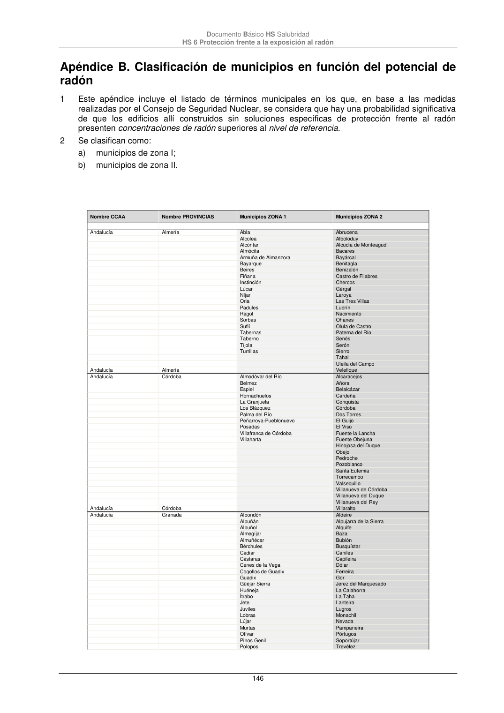

DB-HS Salubridad · edición 2022-06-14 · capa oficial
Documento DB-HS-oficial · SHA-256 del PDF 68df3caacc95f71aee2ec1ba7b2c65ae66155c21e3a8785521b8fdd4fd640d3b
Página física 146 de 184.
Copia fiel del PDF fuente · Fuente oficial
Ficha de la disposición en la fuente oficial
Formato: Texto de la página (Markdown)
Documento Básico HS Salubridad HS 6 Protección frente a la exposición al radón 146 Apéndice B. Clasificación de municipios en función del potencial de radón 1 Este apéndice incluye el listado de términos municipales en los que, en base a las medidas realizadas por el Consejo de Seguridad Nuclear, se considera que hay una probabilidad significativa de que los edificios allí construidos sin soluciones específicas de protección frente al radón presenten concentraciones de radón superiores al nivel de referencia. 2 Se clasifican como: a) municipios de zona I; b) municipios de zona II. Nombre CCAA Nombre PROVINCIAS Municipios ZONA 1 Municipios ZONA 2 Andalucía Almería Abla Abrucena Alcolea Alboloduy Alcóntar Alcudia de Monteagud Almócita Bacares Armuña de Almanzora Bayárcal Bayarque Benitagla Beires Benizalón Fiñana Castro de Filabres Instinción Chercos Lúcar Gérgal Níjar Laroya Oria Las Tres Villas Padules Lubrín Rágol Nacimiento Sorbas Ohanes Suflí Olula de Castro Tabernas Paterna del Río Taberno Senés Tíjola Serón Turrillas Sierro Tahal Uleila del Campo Andalucía Almería Velefique Andalucía Córdoba Almodóvar del Río Alcaracejos Belmez Añora Espiel Belalcázar Hornachuelos Cardeña La Granjuela Conquista Los Blázquez Córdoba Palma del Río Dos Torres Peñarroya-Pueblonuevo El Guijo Posadas El Viso Villafranca de Córdoba Fuente la Lancha Villaharta Fuente Obejuna Hinojosa del Duque Obejo Pedroche Pozoblanco Santa Eufemia Torrecampo Valsequillo Villanueva de Córdoba Villanueva del Duque Villanueva del Rey Andalucía Córdoba Villaralto Andalucía Granada Albondón Aldeire Albuñán Alpujarra de la Sierra Albuñol Alquife Almegíjar Baza Almuñécar Bubión Bérchules Busquístar Cádiar Caniles Cástaras Capileira Cenes de la Vega Dólar Cogollos de Guadix Ferreira Guadix Gor Güéjar Sierra Jerez del Marquesado Huéneja La Calahorra Ítrabo La Taha Jete Lanteira Juviles Lugros Lobras Monachil Lújar Nevada Murtas Pampaneira Otívar Pórtugos Pinos Genil Soportújar Polopos Trevélez

Datos candidatos: compruebe celdas y notas en el PDF.